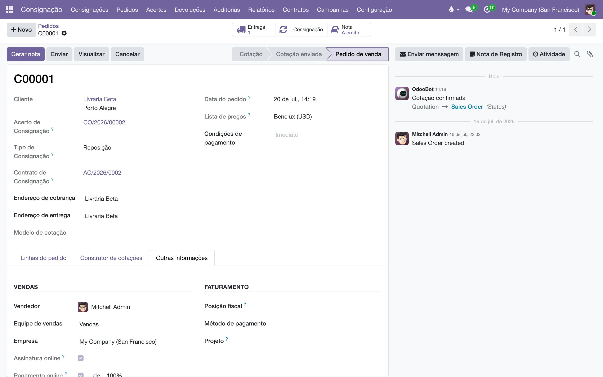

A camada fiscal e contábil da consignação: o valor do estoque consignado numa conta própria, a posição fiscal certa em cada documento, a nota de remessa do Pedido C — e a garantia de que bonificação e feira nunca sejam cobradas de ninguém.
Este módulo não cria menus novos: ele trabalha por baixo dos fluxos que você já conhece dos outros manuais, cuidando de três coisas:
Os lançamentos contábeis funcionam assim: uma remessa (armazém → prateleira) debita a conta de consignação e credita Estoque; um retorno (prateleira → armazém) faz o inverso. Nenhuma venda, fatura ou recebível é criado — movimento de consignação não é venda.
Tudo em (ou , seção Consignação):
Os lançamentos automáticos só acontecem para produtos cuja categoria usa valoração de estoque automatizada (perpétua). Essa é uma decisão contábil da empresa inteira, feita nas categorias de produto do Estoque — o módulo não a toma por você. Sem ela, as quantidades funcionam normalmente, mas o valor não se move entre as contas.
Uma posição fiscal por operação (a mesma dentro e fora do estado; só o CFOP muda entre interno 5xxx e interestadual 6xxx):
| Operação | Campos | CFOPs de referência |
|---|---|---|
| Remessa (Pedido C) | Remessa — Posição Fiscal, Remessa — CFOP interno, Remessa — CFOP interestadual | 5917 / 6917 |
| Acerto (Venda S) | Acerto (Venda) — Posição Fiscal, Acerto — CFOP interno, Acerto — CFOP interestadual | 5114 / 6114 |
| Devolução | Devolução — Posição Fiscal, Devolução — CFOP interno, Devolução — CFOP interestadual | 5918 / 6918 |
A posição fiscal da remessa precisa estar configurada com a marcação de baixa automática (Auto Invoice Paid) e sua conta espelho — é o que faz a nota de remessa nunca virar cobrança. O manual de Notas de remessa explica essa mecânica; sem ela, o botão "Gerar nota" recusa e diz exatamente o que falta.
Mostra (e permite trocar) os tipos de operação do armazém usados pela consignação — Operação de Remessa de Consignação (COM/) e Operação de Retorno de Consignação (RET/). São criados sozinhos no primeiro uso; normalmente não há o que mexer.
No Pedido C, o botão de criar fatura simplesmente não existe — não há o que faturar. No lugar dele:

No financeiro, essas notas aparecem no menu de Remessas com o filtro Consignações — separadas das remessas de bonificação e das demais.
Gerar a nota duas vezes não duplica nada: se o pedido já tem nota, o botão não cria outra.
Quando uma operação de acerto gera a venda S, o sistema aplica automaticamente a Acerto (Venda) — Posição Fiscal das Definições — e recalcula os impostos das linhas com ela. Por que não usar a posição fiscal do cadastro do cliente? Porque o cliente tem uma posição fiscal, e a mesma livraria pode receber remessa de consignação num dia e comprar em firme no outro: a posição fiscal certa depende da operação, não do cadastro. Sem essa troca automática, o padrão do Odoo preencheria a posição de venda comum — e ninguém veria o erro até a nota sair errada.
Para proteger isso sem engessar:
Se a empresa ainda não configurou a posição fiscal do acerto, a venda sai com o padrão do Odoo em vez de travar o fluxo — o acerto é operação diária e não pode parar por configuração pendente. Configure o quanto antes.
Livro dado de presente (bonificação) e livro que viaja para uma feira saem do armazém sem vender — mas não podem entrar no mapa da consignação, senão o acerto acabaria cobrando a livraria por livros que foram dados. O sistema garante a separação:
Na migração da base histórica, essa regra reclassificou 3.124 pedidos que estavam todos como "consignação": só 1.797 eram de fato consignação — 1.212 eram bonificação e 64 eram feira. Se o acerto tivesse rodado sem a regra, as livrarias teriam sido cobradas por livros dados de presente.
Em desenvolvimento: hoje a bonificação e a feira já são documentos distintos e não faturam, mas o efeito físico/contábil completo ainda não existe — a bonificação ainda não baixa o estoque contra uma conta de despesa, e a feira ainda não usa uma localização de evento com retorno próprio (1914/2914). Também está planejada uma tela para o humano classificar os CFOPs ambíguos (5949 "outra saída"). Até lá, trate esses casos com os fluxos padrão do Estoque.
| Regra | Por quê |
|---|---|
| A prateleira não é valorada como estoque comum: seu valor vive na conta de consignação, e volta ao Estoque quando o livro retorna. | O balanço mostra separadamente o que está no armazém e o que está "na rua" — sem dupla contagem e sem esconder o consignado. |
| Prateleira nova já nasce com a conta configurada; o botão "Conectar prateleiras" cobre as antigas. | Configuração feita uma vez, valendo para sempre. |
| A nota de remessa exige a posição fiscal mapeada. Sem o mapeamento, o botão recusa com a instrução exata do que configurar. | Uma remessa de consignação (5917/6917) jamais pode cobrar a livraria; melhor recusar do que emitir errado. |
| Nota de remessa só com o pedido confirmado ("confirme o Pedido primeiro, depois gere a nota") e só em Pedido C ("venda comum fatura pelo Criar fatura"). | Cada documento pela sua porta. |
| CFOP e tipo de documento têm de concordar — consignação vira Pedido C, bonificação/feira nunca. | É o CFOP que diz o que a operação é; deixar o tipo à escolha repetiria o erro da base migrada. |
| Bonificação e feira não faturam. | Presente é despesa; feira é transferência. Nenhum dos dois é receita. |
| A posição fiscal da venda do acerto é travada para quem não é Administrador de faturamento. | Erro de posição fiscal só aparece na nota — tarde demais. Visível para conferir, editável só com responsabilidade fiscal. |
Preciso usar este módulo para a consignação funcionar?
Os fluxos físicos (remessa, acerto, devolução) funcionam sem ele. Este módulo entra quando a contabilidade e as notas importam: valor consignado em conta própria, posição fiscal certa por operação e a nota de remessa do Pedido C.
Configurei a conta 115000 e o saldo não se mexe.
Confira duas coisas: se clicou em Conectar prateleiras de consignação (para as prateleiras antigas) e se as categorias dos produtos usam valoração automatizada — sem ela não há lançamento automático de estoque nenhum, consignado ou não.
A livraria recebeu cobrança junto com a nota de remessa?
Não deveria — a nota é lançada auto-baixada. Se houve cobrança, a posição fiscal da remessa foi trocada ou perdeu a marcação de baixa automática; confira as Definições e o manual de Notas de remessa.
Para que servem os campos de CFOP das Definições se a nota não os imprime?
Eles registram a parametrização fiscal da casa (que CFOP cada operação usa, interno e interestadual) e servem de referência para a emissão. A transmissão da NF-e à SEFAZ não acontece neste sistema — a emissão oficial segue no emissor da casa, com estes códigos.
Manual completo, com busca e as demais páginas: Fiscal da consignação.